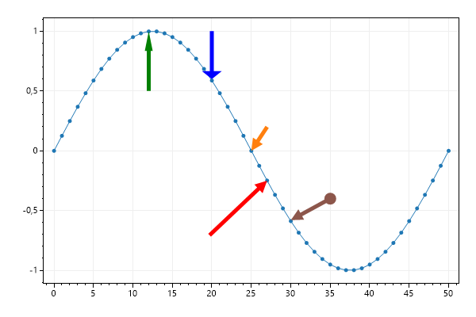

This page contains recipes for the Arrow category.
Visit the Cookbook Home Page to view all cookbook recipes.
Visit the Cookbook Home Page to view all cookbook recipes.
Arrows
Arrows point to specific locations on the plot.
var plt = new ScottPlot.Plot(600, 400);
// plot some sample data
plt.AddSignal(DataGen.Sin(51));
// add arrows using coordinates
plt.AddArrow(25, 0, 27, .2);
// you can define a minimum length so the line persists even when zooming out
var arrow2 = plt.AddArrow(27, -.25, 23, -.5);
arrow2.Color = System.Drawing.Color.Red;
arrow2.MinimumLengthPixels = 100;
// the shape of the arrowhead can be adjusted
var skinny = plt.AddArrow(12, 1, 12, .5);
skinny.Color = System.Drawing.Color.Green;
skinny.ArrowheadLength = 5;
skinny.ArrowheadWidth = 2;
var fat = plt.AddArrow(20, .6, 20, 1);
fat.Color = System.Drawing.Color.Blue;
fat.ArrowheadLength = 2;
fat.ArrowheadWidth = 5;
// a marker can be drawn at the base of the arrow
var arrow3 = plt.AddArrow(30, -.58, 35, -.4);
arrow3.MarkerSize = 15;
plt.SaveFig("plottable_arrow_quickstart.png");
